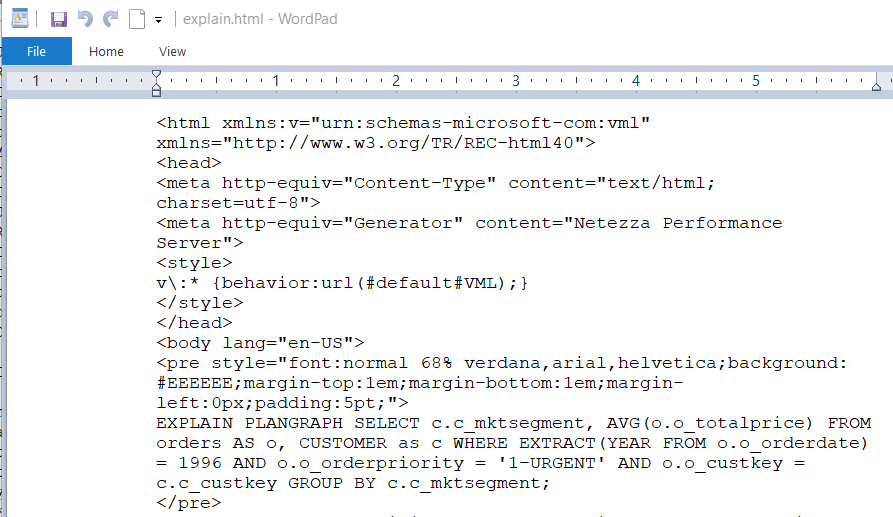
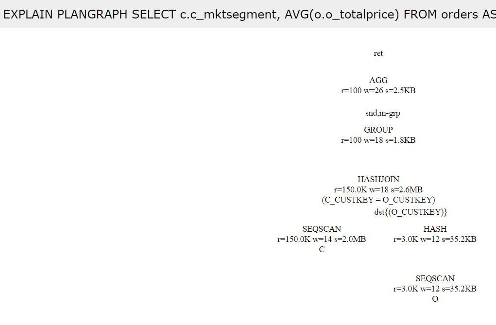
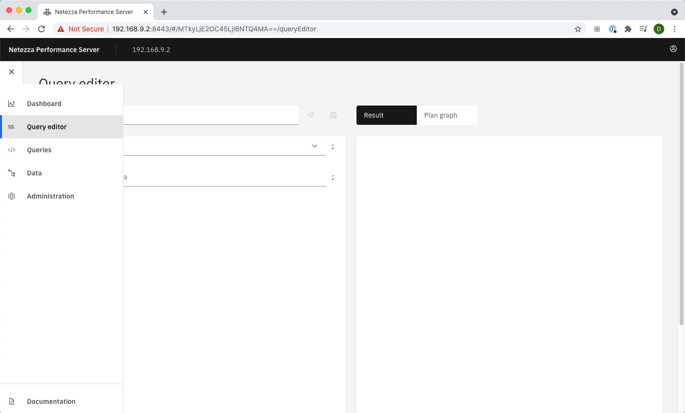
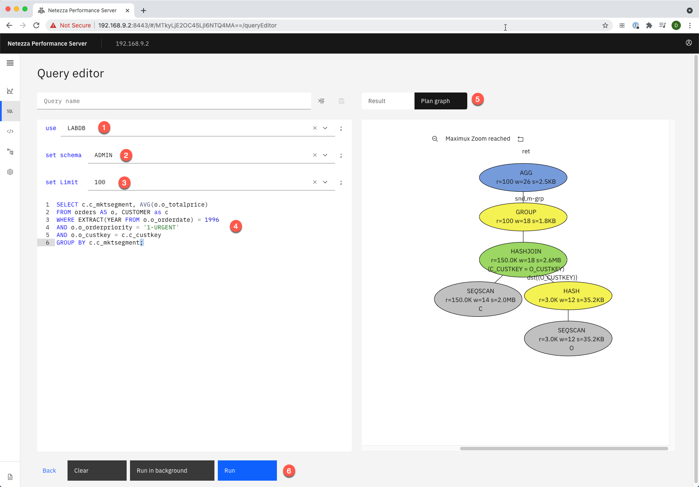

Query Optimization
Netezza Performance Server uses a cost-based optimizer to determine the best method for scan and join operations, join order, and data movement between SPUs (redistribute or broadcast operations if necessary). For example, the planner tries to avoid redistributing large tables because of the performance impact. The optimizer can also dynamically rewrite queries to improve query performance.
The optimizer takes a SQL query as input and creates a detailed execution or query plan for the database system. For the optimizer to create the best execution plan that results in the best performance, it must have the most up-to-date statistics. You can use EXPLAIN, HTML (also known as bubble), and text plans to analyze how the Netezza Performance Server system executes a query.
Explain is a very useful tool to spot and identify performance problems, bad distribution keys, badly written SQL queries and out-of-date statistics.
Objectives
During our POC we have identified a couple of very long running customer queries that have significantly worse performance than the number of rows involved would suggest. In this lab we will use Explain functionality to identify the concrete bottlenecks and if possible, fix them to improve query performance.
Lab Setup
This lab uses an initial setup script to make sure the correct user and database exist for the remainder of the lab. Follow the instructions below to run the setup script.
-
Login to NPS Command Line using one of these two methods.
a. Login to the VM directly and use the terminal application available inside the VM.
b. Connect to your Netezza Performance Server image using putty
-
If you are continuing from the previous lab and are already connected to NZSQL quit the NZSQL console with the \q command.
-
Prepare for this lab by running the setup script. To do this use the following two commands:
Input
cd ~/labs/queryOptimization/setupLab
./setupLab.sh
Output
DROP DATABASE
CREATE DATABASE
DROP USER
CREATE USER
ALTER USER
ALTER DATABASE
CREATE TABLE
CREATE TABLE
CREATE TABLE
CREATE TABLE
CREATE TABLE
CREATE TABLE
CREATE TABLE
CREATE TABLE
Load session of table 'NATION' completed successfully
Load session of table 'REGION' completed successfully
Load session of table 'CUSTOMER' completed successfully
Load session of table 'SUPPLIER' completed successfully
Load session of table 'PART' completed successfully
Load session of table 'PARTSUPP' completed successfully
Load session of table 'ORDERS' completed successfully
Load session of table 'LINEITEM' completed successfully
There may be error message at the beginning of the output since the script tries to clean up existing databases and users.
- Switch to the lab directory ~/labs/queryOptimization. To do this use the following command: (Notice that you can use bash auto complete by using the Tab key to complete folder and files names)
Input
cd ~/labs/queryOptimization
Output
[nz@localhost queryOptimization]$
The command line prompt changes to reflect the directory you are in (queryOptimization).
Generate Statistics
Cost based optimizers depend on accurate information about the data in the tables in order to generate well optimized query plans. This part of the lab looks at the importance of having up to date statistics about the table data, such as number of rows, size of the rows, size of the table, number of columns, number of unique values in each column, etc. The generate statistics command is used to collect the statistical information about the tables and columns.
Our first long running customer query returns the average order price by customer segment for a given year and order priority. It joins the customer table for the market segment and the orders table for the total price of the order. Due to restrictive join conditions it shouldn't require too much processing time. But on our test systems it runs a very long time. In this chapter we will use Netezza Performance Server's Explain functionality to find out why this is the case. The customer query in question:
SELECT c.c_mktsegment, AVG(o.o_totalprice)
FROM orders AS o, CUSTOMER as c
WHERE EXTRACT(YEAR FROM o.o_orderdate) = 1996 AND o.o_orderpriority =
'1-URGENT'
GROUP BY c.c_mktsegment;
- First, we will make sure that the system doesn't run a different workload that could influence our tests. Use the following nzsession command to verify that the system is free:
Input
nzsession show
Output
ID Type User Start Time PID Database Schema State Priority Name Client IP Client PID Command
----- ---- ----- ----------------------- ----- -------- ------ ------ ------------ --------- ---------- ------------------------
21920 sql ADMIN 03-Apr-20, 16:35:54 PDT 15500 SYSTEM ADMIN active normal 127.0.0.1 15497 SELECT session_id, clien
This result shows that there is currently only one session connected to the database, which is the nzsession command itself. Per default the database user in your VM image is ADMIN. Executing this command before doing any performance measurements ensures that other workloads are not influencing the performance of the system. You can use the nzsession command as well to abort bad or locked sessions.
- After we verified that the system is free, we can start analyzing the query. Connect to the lab database with the following command:
Input
nzsql labdb labadmin
!! abstract "Output"
Welcome to nzsql, the IBM Netezza SQL interactive terminal.
Type: \h for help with SQL commands
\? for help on internal slash commands
\g or terminate with semicolon to execute query
\q to quit
LABDB.ADMIN(LABADMIN)=>
- Let's first have a look at the two tables and the WHERE conditions to get an idea of the row numbers involved. Our query joins the CUSTOMER table without any where condition applied to it and the ORDERS table that has two where conditions restricting it on the date and order priority. From the data distribution lab, we know that the CUSTOMER table has 150000 rows. To get the rows that are involved from the ORDERS table Execute the following COUNT(*) command:
Input
SELECT COUNT(*) FROM orders
WHERE EXTRACT(YEAR FROM o_orderdate) = 1996 AND o_orderpriority =
'1-URGENT';
Output
COUNT
-------
46014
(1 row)
So, the ORDERS table has 46014 rows that fit the WHERE condition. We will use EXPLAIN functionality to check if the available Statistics allow the Netezza Performance Server optimizer to estimate this correctly for its plan creation.
- The Netezza Performance Server optimizer uses statistics about the data in the system to estimate the number of rows that result from WHERE conditions, joins, etc. Doing wrong approximations can lead to bad execution plans. For example, a huge result set could be broadcast for a join instead of doing a double redistribution. To see its estimated rows for the WHERE conditions in our query run the following EXPLAIN command:
Input
EXPLAIN VERBOSE SELECT COUNT(*) FROM orders
WHERE EXTRACT(YEAR FROM o_orderdate) = 1996 AND o_orderpriority =
'1-URGENT';
Output
EXPLAIN VERBOSE SELECT COUNT(*) FROM orders WHERE EXTRACT(YEAR FROM
o_orderdate) = 1996 AND o_orderpriority = '1-URGENT';
QUERY VERBOSE PLAN:
Node 1.
[SPU Sequential Scan table "ORDERS" {(ORDERS.O_ORDERKEY)}]
-- **Estimated Rows = 150**, Width = 0, Cost = 0.0 .. 1653.2, Conf =
64.0
Restrictions:
((ORDERS.O_ORDERPRIORITY = '1-URGENT'::BPCHAR) AND
(DATE_PART('YEAR'::"VARCHAR", ORDERS.O_ORDERDATE) = 1996))
Projections:
Node 2.
[SPU Aggregate]
-- Estimated Rows = 1, Width = 8, Cost = 1653.2 .. 1653.2, Conf = 0.0
Projections:
1:COUNT(*)
[SPU Return]
[HOST Merge Aggs]
[Host Return]
..<Removed Plan Text>..
The execution plan of this query consists of two nodes or snippets. First the table is scanned and the WHERE conditions are applied, which can be seen in the Restrictions sub node. Since we use a COUNT(*) the Projections node is empty. Then an Aggregation node (Node 2) is applied to count the rows that are returned by node 1.
When we look at the estimated number of rows, we can see that it is way off the mark. The Netezza Performance Server Optimizer estimates from its available statistics that only 150 rows are returned by the WHERE conditions. We have seen before that in reality its 46014 or roughly 300 times as many.
- One way to help the optimizer in its estimates is the collection of detailed statistics about the involved tables. Execute the following command to generate full, detailed statistics about the ORDERS table:
!! abstract "Input"
GENERATE STATISTICS ON orders;
Output
GENERATE STATISTICS
Since generating full statistics involves a table scan this command may take some time to execute, especially on a table with many rows and columns.
- We will now check if generating statistics has improved the estimates. Execute the EXPLAIN command again:
Input
EXPLAIN VERBOSE SELECT COUNT(*) FROM orders
WHERE EXTRACT(YEAR FROM o_orderdate) = 1996 AND o_orderpriority =
'1-URGENT';
Output
EXPLAIN VERBOSE SELECT COUNT(*) FROM orders WHERE EXTRACT(YEAR FROM
o_orderdate) = 1996 AND o_orderpriority = '1-URGENT';
QUERY VERBOSE PLAN:
Node 1.
[SPU Sequential Scan table "ORDERS" {(ORDERS.O_ORDERKEY)}]
-- **Estimated Rows = 3000**, Width = 0, Cost = 0.0 .. 1653.2, Conf =
64.0
Restrictions:
((ORDERS.O_ORDERPRIORITY = '1-URGENT'::BPCHAR) AND
(DATE_PART('YEAR'::"VARCHAR", ORDERS.O_ORDERDATE) = 1996))
Projections:
Node 2.
[SPU Aggregate]
-- Estimated Rows = 1, Width = 8, Cost = 1653.4 .. 1653.4, Conf = 0.0
Projections:
1:COUNT(*)
[SPU Return]
[HOST Merge Aggs]
[Host Return]
..< Removed Plan Text >..
As we can see the estimated rows of the SELECT query have improved drastically. The optimizer now assumes this WHERE condition will apply to 3000 rows of the order table. Still significantly off the true number of 46000 but by a factor of 20 better than the original estimate of 150.
Estimations are very difficult to make. Obviously, the optimizer cannot do the actual computation during planning. It relies on current statistics about the involved columns. Statistics include min/max values, distinct values, numbers of null values etc. Some of these statistics are collected on the fly but the most detailed statistics can be generated manually with the Generate Statistics command (or the nz_genstats command with "full" option). Generating full statistics after loading a table or changing its content significantly is one of the most important administration tasks in Netezza Performance Server. The Netezza Performance Server appliance will automatically generate express statistics after many tasks like load operations and just-in-time statistics during planning. Nevertheless, full statistics should be generated on a regular basis.
Identifying Join Problems
In the last chapter we have taken a first look at the tables involved in our join query and have improved optimizer estimates by generating statistics on the involved tables. Now we will have a look at the complete execution plan, and we will have a specific look at the distribution and involved join.
In our example we have a query that doesn't finish in a reasonable amount of time. It is taken much longer than you would expect from the involved data sizes. We will now analyze why this is the case.
- Let's analyze the execution plan for this query using the EXPLAIN VERBOSE command:
Input
EXPLAIN VERBOSE SELECT c.c_mktsegment,
AVG(o.o_totalprice) FROM orders AS o, CUSTOMER as c WHERE EXTRACT(YEAR
FROM o.o_orderdate) = 1996 AND o.o_orderpriority = '1-URGENT' GROUP BY
c.c_mktsegment;
Output
EXPLAIN VERBOSE SELECT c.c_mktsegment, AVG(o.o_totalprice) FROM orders
AS o, CUSTOMER as c WHERE EXTRACT(YEAR FROM o.o_orderdate) = 1996 AND
o.o_orderpriority = '1-URGENT' GROUP BY c.c_mktsegment;
QUERY VERBOSE PLAN:
Node 1.
[SPU Sequential Scan table "CUSTOMER" as "C" {(C.C_CUSTKEY)}]
-- Estimated Rows = 150000, Width = 10, Cost = 0.0 .. 258.4, Conf =
100.0
Projections:
1:C.C_MKTSEGMENT
[SPU Broadcast]
Node 2.
[SPU Sequential Scan table "ORDERS" as "O" {(O.O_ORDERKEY)}]
-- Estimated Rows = 3000, Width = 8, Cost = 0.0 .. 1653.2, Conf = 64.0
Restrictions:
((O.O_ORDERPRIORITY = '1-URGENT'::BPCHAR) AND
(DATE_PART('YEAR'::"VARCHAR", O.O_ORDERDATE) = 1996))
Projections:
1:O.O_TOTALPRICE
Node 3.
[SPU Nested Loop Stream "Node 2" with Temp "Node 1"
{(O.O_ORDERKEY)}]
-- Estimated Rows = 450000007, Width = 18, Cost = 660086.9 ..
7306828.5, Conf = 64.0
Restrictions:
't'::BOOL
Projections:
1:C.C_MKTSEGMENT 2:O.O_TOTALPRICE
Node 4.
[SPU Group]
-- Estimated Rows = 100, Width = 18, Cost = 660086.9 .. 7341984.7, Conf
= 0.0
Projections:
1:C.C_MKTSEGMENT 2:O.O_TOTALPRICE
[SPU Return]
[HOST Merge Group]
Node 5.
[Host Aggregate]
-- Estimated Rows = 100, Width = 26, Cost = 660086.9 .. 7341984.7, Conf
= 0.0
Projections:
1:C.C_MKTSEGMENT 2:(SUM(O.O_TOTALPRICE) /
"NUMERIC"(COUNT(O.O_TOTALPRICE)))
[Host Return]
..<Removed Plan Text>..
- First try to answer the following questions through the execution plan yourself. Take your time. We will walk through the answers after that.
| Question | Answer |
|---|---|
| a. Which columns of Table CUSTOMER are used in further computations? | |
| b. Is Table CUSTOMER redistributed, broadcast or can it be joined locally? | |
| c. Is Table ORDERS redistributed, broadcast or can it be joined locally? | |
| d. In which node are the WHERE conditions applied and how many rows does Netezza Performance Server expect to fulfill the where condition? | |
| e. What kind of join takes place and in which node? | |
| f. What is the number of estimated rows for the join? | |
| g. What is the most expensive node and why? |
Hint: A stream operation in Netezza Performance Server Explain is an operation whose output data isn't persisted on disk but streamed to further computation nodes or snippets for a local join or local aggregation. No data is broadcast or redistributed in a stream operation.
- So let's walk through the questions:
a. Which columns of Table CUSTOMER are used in further computations?
The first node in the execution plan does a sequential scan of the CUSTOMER table on the SPUs. It estimates that 150000 rows are returned which we know is the number of rows in the CUSTOMER table.
Node 1.
[SPU Sequential Scan table "CUSTOMER" as "C" {(C.C_CUSTKEY)}]
-- Estimated Rows = 150000, Width = 10, Cost = 0.0 .. 258.4, Conf =
100.0
**Projections:**
**1:C.C_MKTSEGMENT**
**[SPU Broadcast]**
b. Is Table CUSTOMER redistributed, broadcast or can it be joined locally?
During scan the CUSTOMER table is broadcast to the other SPUs as seen by the "[SPU Broadcast]" clause in Node 1. This means that a complete CUSTOMER table is assembled on the host and broadcast to each SPU for further computation of the query. This may seem surprising at first since we have a substantial number of rows. But since the width of the result set is only 10 Bytes we are talking about 150000 rows * 10 Bytes = 1.5MB. This is a small amount of data for a warehousing system.
c. Is Table ORDERS redistributed, broadcast or can it be joined locally?
Node 2.
[SPU Sequential Scan table "ORDERS" as "O" {(O.O_ORDERKEY)}]
**-- Estimated Rows = 3000**, Width = 8, Cost = 0.0 .. 1653.2, Conf =
64.0
**Restrictions:**
**((O.O_ORDERPRIORITY = '1-URGENT'::BPCHAR) AND
(DATE_PART('YEAR'::"VARCHAR", O.O_ORDERDATE) = 1996))**
Projections:
1:O.O_TOTALPRICE
d. In which node are the WHERE conditions applied and how many rows does Netezza Performance Server expect to fulfill the WHERE condition?
We can see from the "Restrictions" clause in Node 2 that the WHERE conditions of our query are applied here. This should be clear since both WHERE conditions are applied to the ORDERS table and the restriction of rows can occur during the scan of the ORDERS table. As we can see in the "Estimated Rows" clause, the optimizer estimates a returned set of 3000 rows. We know this is not a perfect estimate since we found 46014 rows are returned from this table.
e. What kind of join takes place and in which node?
Node 3.
**[SPU Nested Loop Stream "Node 2" with Temp "Node 1"
{(O.O_ORDERKEY)}]**
**-- Estimated Rows = 450000007**, Width = 18, **Cost = 660086.9 ..
7306828.5**, Conf = 64.0
Restrictions:
't'::BOOL
Projections:
1:C.C_MKTSEGMENT 2:O.O_TOTALPRICE
Also look at the two columns that continue to be projected for further use in the query plan. These are the columns that were projected from Node 1 and Node 2.
f. What is the number of estimated rows for the join?
We can see in the "Estimated Rows" clause that the optimizer estimates this join node to return roughly 450m rows. The 450m rows is the number of rows from the first node times the number of rows from the second node.
g. What is the most expensive node and why?
The "Cost" clause provides an estimate of how expensive a Node is, where a higher cost usually leads to longer execution time. As we can see from the "Cost" clause in Node 3, the optimizer estimates that the join has a cost in the range from 660086.9 .. 7306828.5. This is a dramatically higher cost than what was estimated for Node 1 and Node 2. Node 4 and 5, which group and aggregate the result set, do not add much cost eitherl. So, our performance problems clearly originate in the join node 3.
So, what is happening here? If we look at the query, we can assume that it is intended to compute the average order cost per market segment. This means we should join all customers to their corresponding order rows. But for this to happen we would need a join condition that joins the CUSTOMER table and the ORDERS table on the customer key. Instead the query performs a Cartesian Join, joining each customer row to each orders row. This is a very work intensive query that results in the behavior we have seen. The joined result set becomes huge. And the result does not answer the question that we intended to ask.
- So how do we fix this? By adding a join condition to the query that makes sure that customers are only joined to their orders. This additional join condition is O.O_CUSTKEY=C.C_CUSTKEY. Execute the following EXPLAIN command for the modified query.
Input
EXPLAIN VERBOSE SELECT c.c_mktsegment,
AVG(o.o_totalprice) FROM orders AS o, CUSTOMER as c WHERE EXTRACT(YEAR
FROM o.o_orderdate) = 1996 AND o.o_orderpriority = '1-URGENT' AND
o.o_custkey = c.c_custkey GROUP BY c.c_mktsegment;]
Output
EXPLAIN VERBOSE SELECT c.c_mktsegment, AVG(o.o_totalprice) FROM orders
AS o, CUSTOMER as c WHERE EXTRACT(YEAR FROM o.o_orderdate) = 1996 AND
o.o_orderpriority = '1-URGENT' AND o.o_custkey = c.c_custkey GROUP BY
c.c_mktsegment;
QUERY VERBOSE PLAN:
Node 1.
[SPU Sequential Scan table "ORDERS" as "O" {(O.O_ORDERKEY)}]
-- Estimated Rows = 3000, Width = 12, Cost = 0.0 .. 1653.2, Conf = 64.0
Restrictions:
((O.O_ORDERPRIORITY = '1-URGENT'::BPCHAR) AND
(DATE_PART('YEAR'::"VARCHAR", O.O_ORDERDATE) = 1996))
Projections:
1:O.O_TOTALPRICE **2:O.O_CUSTKEY**
Cardinality:
O.O_CUSTKEY 3.0K (Adjusted)
**[SPU Distribute on {(O.O_CUSTKEY)}]**
**[HashIt for Join]**
Node 2.
[SPU Sequential Scan table "CUSTOMER" as "C" {(C.C_CUSTKEY)}]
-- Estimated Rows = 150000, Width = 14, Cost = 0.0 .. 258.4, Conf =
100.0
Projections:
1:C.C_MKTSEGMENT **2:C.C_CUSTKEY**
Node 3.
**[SPU Hash Join Stream "Node 2" with Temp "Node 1"
{(O.O_CUSTKEY,C.C_CUSTKEY)}]**
**-- Estimated Rows = 150000**, Width = 18, **Cost = 1653.2 ..
2015.2**, Conf = 51.2
**Restrictions:**
**(C.C_CUSTKEY = O.O_CUSTKEY)**
Projections:
1:C.C_MKTSEGMENT 2:O.O_TOTALPRICE
Cardinality:
O.O_CUSTKEY 100 (Adjusted)
..<Removed Plan Text>..
As you can see there have been some changes to the execution plan. The ORDERS table is now scanned and distributed on the customer key rather than broadcast. The CUSTOMER table is already distributed on the customer key, so no redistribution needs to happen. Both tables are then joined in node 3 through a Hash Join on the customer key, as seen in the "Restrictions" clause. Also see how the join key of each table is now projected in Node 1 and Node 2 so the join can be done in Node 3. The estimated number of rows is now 150000, the same as the number of customers. Since we have a 1:n relationship between customers and orders this is as we would expect. Also, the estimated cost of Node 3 has come down by over a factor of 100!
-
Let's make sure that the query performance has indeed improved. Switch on the display of elapsed query time with the following command:
Input
\time
If you want, you can later switch off the elapsed time display by executing the same command again. It is a toggle.
- Now execute our modified query:
Input
SELECT c.c_mktsegment, AVG(o.o_totalprice)
FROM orders AS o,CUSTOMER as c
WHERE EXTRACT(YEAR FROM o.o_orderdate) = 1996 AND
o.o_orderpriority = '1-URGENT' AND
o.o_custkey = c.c_custkey
GROUP BY c.c_mktsegment;
Output
C_MKTSEGMENT | AVG
--------------+---------------
BUILDING | 151275.977882
MACHINERY | 151348.971079
HOUSEHOLD | 150196.009267
FURNITURE | 150998.129771
AUTOMOBILE | 151488.825830
(5 rows)
Elapsed time: 0m0.796s
Before we made our changes the query took so long that we couldn't wait for it to finish. After our changes the execution time has improved to slightly under a second. In this relatively simple case we might have been able to pinpoint the problem through analyzing the SQL on its own. But this can be almost impossible for complicated multi-join queries that are often used in warehousing. Reporting and BI tools tend to create very complicated portable SQL as well. In these cases, EXPLAIN can be a valuable tool to pinpoint the problem.
HTML Explain
In this section we will look at the HTML plangraph for the customer query that we just fixed. Besides the text descriptions of the exeution plan we used in the previous chapter, PureData System provides the ability to generate a graphical query tree as well. This is done with the help of HTML. So plangraph files can be created and viewed in your internet browser. PureData System can be configured to save a HTML plangraph or plantext file for every executed SQL query. But in this chapter we will use the basic EXPLAIN PLANGRAPH command and use Cut&Paste to export the file to your host computer.
- Enter the query with the keyword EXPLAIN PLANGRAPH to generate the HTML plangraph:
Input
EXPLAIN PLANGRAPH SELECT c.c_mktsegment,
AVG(o.o_totalprice) FROM orders AS o, CUSTOMER as c WHERE EXTRACT(YEAR
FROM o.o_orderdate) = 1996 AND o.o_orderpriority = '1-URGENT' AND
o.o_custkey = c.c_custkey GROUP BY c.c_mktsegment;
Output
NOTICE: QUERY PLAN:
**<html xmlns:v="urn:schemas-microsoft-com:vml"
xmlns="http://www.w3.org/TR/REC-html40">**
<head>
<meta http-equiv="Content-Type" content="text/html;
charset=utf-8">
<meta http-equiv="Generator" content="Netezza Performance Server">
<style>
v\:* {behavior:url(#default#VML);}
</style>
</head>
<body lang="en-US">
<pre style="font:normal 68%
verdana,arial,helvetica;background:#EEEEEE;margin-top:1em;margin-bottom:1em;margin-left:0px;padding:5pt;">
EXPLAIN PLANGRAPH SELECT c.c_mktsegment, AVG(o.o_totalprice) FROM orders
AS o, CUSTOMER as c WHERE EXTRACT(YEAR FROM o.o_orderdate) = 1996 AND
o.o_orderpriority = '1-URGENT' AND o.o_custkey = c.c_custkey GROUP BY
c.c_mktsegment;
</pre>
<v:textbox
style="position:absolute;margin-left:230pt;margin-top:19pt;width:80pt;height:25pt;z-index:10;">
<p style="text-align:center;font-size:6pt;">AGG<br/>r=100 w=26
s=2.5KB</p></v:textbox>
<v:oval
style="position:absolute;margin-left:231pt;margin-top:15pt;width:78pt;height:25pt;z-index:9;"
fillcolor="#808080"></v:oval>
<v:textbox
style="position:absolute;margin-left:230pt;margin-top:0pt;width:80pt;height:25pt;z-index:10;">
<p style="text-align:center;font-size:6pt;">ret</p></v:textbox>
<v:textbox
style="position:absolute;margin-left:230pt;margin-top:54pt;width:80pt;height:25pt;z-index:10;">
<p style="text-align:center;font-size:6pt;">GROUP<br/>r=100 w=18
s=1.8KB</p></v:textbox>
<v:oval
style="position:absolute;margin-left:231pt;margin-top:50pt;width:78pt;height:25pt;z-index:9;"></v:oval>
<v:line style="position:absolute;z-index:8;" from="270pt,27pt"
to="270pt,62pt"/>
<v:textbox
style="position:absolute;margin-left:233pt;margin-top:42pt;width:80pt;height:25pt;z-index:10;">
<p
style="text-align:center;font-size:6pt;">snd,m-grp</p></v:textbox>
<v:textbox
style="position:absolute;margin-left:230pt;margin-top:89pt;width:80pt;height:31pt;z-index:10;">
<p style="text-align:center;font-size:6pt;">HASHJOIN<br/>r=150.0K
w=18 s=2.6MB<br/>(C_CUSTKEY = O_CUSTKEY)</p></v:textbox>
<v:oval
style="position:absolute;margin-left:231pt;margin-top:85pt;width:78pt;height:31pt;z-index:9;"></v:oval>
<v:line style="position:absolute;z-index:8;" from="270pt,62pt"
to="270pt,100pt"/>
<v:textbox
style="position:absolute;margin-left:190pt;margin-top:124pt;width:80pt;height:31pt;z-index:10;">
<p style="text-align:center;font-size:6pt;">SEQSCAN<br/>r=150.0K
w=14 s=2.0MB<br/>C</p></v:textbox>
<v:oval
style="position:absolute;margin-left:191pt;margin-top:120pt;width:78pt;height:31pt;z-index:9;"></v:oval>
<v:line style="position:absolute;z-index:8;" from="270pt,97pt"
to="230pt,135pt"/>
<v:textbox
style="position:absolute;margin-left:270pt;margin-top:124pt;width:80pt;height:25pt;z-index:10;">
<p style="text-align:center;font-size:6pt;">HASH<br/>r=3.0K w=12
s=35.2KB</p></v:textbox>
<v:oval
style="position:absolute;margin-left:271pt;margin-top:120pt;width:78pt;height:25pt;z-index:9;"></v:oval>
<v:line style="position:absolute;z-index:8;" from="270pt,97pt"
to="310pt,132pt"/>
<v:textbox
style="position:absolute;margin-left:253pt;margin-top:112pt;width:80pt;height:25pt;z-index:10;">
<p
style="text-align:center;font-size:6pt;">dst{(O_CUSTKEY)}</p></v:textbox>
<v:textbox
style="position:absolute;margin-left:270pt;margin-top:159pt;width:80pt;height:31pt;z-index:10;">
<p style="text-align:center;font-size:6pt;">SEQSCAN<br/>r=3.0K
w=12 s=35.2KB<br/>O</p></v:textbox>
<v:oval
style="position:absolute;margin-left:271pt;margin-top:155pt;width:78pt;height:31pt;z-index:9;"></v:oval>
<v:line style="position:absolute;z-index:8;" from="310pt,132pt"
to="310pt,170pt"/>
</body>
**</html>**
EXPLAIN
Next open your host computer's text editor. If your workstation is
windows open wordpad, if you use a Linux desktop use the default text
editor like KEDIT, or GEDIT. Copy the output from the explain
plangraph from your putty window into notepad. Make sure that you only
copy the HTML file from the **<html ..** start tag to the
<!--**html-->** end tag.
- Save the file as "explain.html" on your desktop.

- Now on your desktop double click on "explain.html". In windows make sure to open it with Google Chrome since this will result in the best output.

You can see a graphical representation of the query we analyzed before. The left leg of the tree is the scan node of the Customer tables C, the right leg contains a scan of the Orders table O and a node hashing the result set from orders in preparation for the HASHJOIN node, that is joining the result sets of the two table scans on the customer key. After the join the result is fed into a GROUP node and an Aggregation node that computes the Average total price, before being returned to the caller.
A graphical representation of the execution plan can be valuable for complicated multi-join queries to get an overview of the join.
The Web Console can generate the graphically representation of the query. Run the query from "Query Editor".

Open the NPS Web Console: <https://192.168.9.2:8443> from a browser. If
the NPS Web Console doesn't start reinstall the console as follows:
Stop active containers:
Input
docker ps
Take note of the container IDs.
Stop active containers:
Input
docker stop <container-ID>
Remove the inactive containers:
Input
docker ps -a
Take note of the container IDs.
Stop active containers:
Input
docker rm <container-ID>
Reinstall NPS Console:
Input
/root/cyclops_dockerrun/standalone-install.sh
In the Query Editor:
-
use:
LABDB -
set schema:
ADMIN -
set limit:
100 -
Query:
SELECT c.c_mktsegment, AVG(o.o_totalprice) FROM orders AS o, CUSTOMER as c WHERE EXTRACT(YEAR FROM o.o_orderdate) = 1996 AND o.o_orderpriority = '1-URGENT' AND o.o_custkey = c.c_custkey GROUP BY c.c_mktsegment; -
Click "Plan graph"
-
Click "Run"

Congratulations in this lab you have used NPS system Explain functionality to analyze a query.